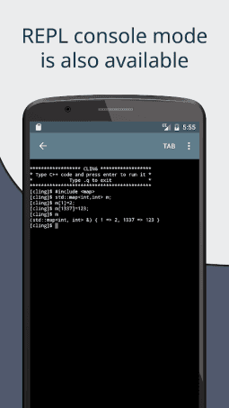
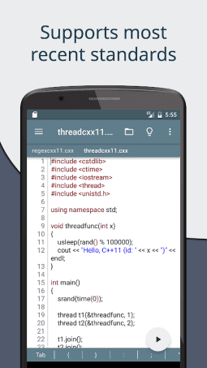

Cxxdroid 对比评测：手机上写 C++，它凭什么比同行更顺手
手机端 C/C++ 开发工具不少，但真正能让你放下键盘连续敲半小时的没几个。Cxxdroid 把编译器、编辑器、调试器打包成一个 APK，开箱即用。
定位：同类里它排第几
如果把手机端 C/C++ 开发工具当成一个赛道，Cxxdroid 的位置其实挺清晰的——不是唯一选项，但大概率是你装了之后不会马上卸载的那个。
这个赛道大致分成三类：第一类是「只提供编译器」的工具链，比如纯粹把 clang/gcc 搬到 Android 上让你在终端里手敲 vim + make 的方案，优点是自由度高，缺点是没有编辑器、没有调试、没有项目管理，跑个 Hello World 都得折腾半小时环境；第二类是在线 IDE 客户端，跑在浏览器或者远程服务器上，功能看起来完整，但网络依赖重、延迟不可控，手机上敲一个大括号都要等半秒；第三类就是 Cxxdroid 的官网上主打的这种本地完整 IDE——编译、编辑、调试一把梭，装完 APK 就能写。
Cxxdroid 属于第三类里做得最成熟的一个。不是说它没有对手，而是对手要么功能不完整、要么体验差到让人怀疑人生。你如果真打算在手机上正经写 C++（不是上课传作业那种临时跑一下），基本绕不开它。
差异化一：真·开箱即用的工具链
手机上开发 C++ 最大的门槛从来不是写代码本身，而是让编译器先跑起来。
Cxxdroid 做对的第一件事，就是把 Android NDK、clang、CMake、pkg-config 这些东西全部预打包了。你从下载拿到 APK、点开应用、新建项目、写一个 Hello World、点编译按钮，它就能跑——中间不需要你手动装任何东西、不需要配环境变量、不需要折腾交叉编译链。
这听起来像是个很基础的要求，但对比一下就知道不是。我之前试过另一个同类工具，光让它找到编译器就得手动填三四个路径，NDK 还要自己去 Google 下载解压到指定目录，折腾了四十分钟才搞定。而 Cxxdroid 打开就能用，这一点就甩开了大部分同类。
项目结构也想得比较清楚。单文件模式适合跑代码片段——不需要写 CMakeLists.txt，直接开一个 tab 点编译就行；C++ 项目自动生成 CMakeLists.txt，C 项目可以选 Makefile 或 CMake；从电脑拷过来的已有项目也能直接打开，CMake 项目选 CMakeLists.txt 作为入口，纯 C 项目打开 .c 文件就自动识别关联。

差异化二：调试器是真能用的
很多人觉得手机上写代码已经很勉强了，调试就别想了——但 Cxxdroid 偏偏把调试器也做进了应用里。
底层用的是 GNU Debugger（gdb），几十年历史，文档和社区支持都足。核心功能一个不缺：行断点、Step Over / Into / Out 单步、当前作用域变量查看、调用栈展示。调试界面布局也合理——左侧源代码，行号上点一下就加断点；底部变量值和调用栈面板；控制栏就在调试按钮旁边。
实际用起来，跑崩了的程序自动停在崩溃点，变量值直接显示，比肉眼盯着一堆日志猜到底哪个指针空了要快得多。循环卡住了就在循环体内设个断点，观察条件变量每次迭代的变化，几秒就能定位。
当然它的调试器跟桌面 CLion 比还是有差距的——没有条件断点、没有表达式求值器、不能点开 STL 容器看嵌套成员、没有 AddressSanitizer 和性能分析器。但核心的断点 + 单步 + 变量值查看这三件事，足够应付大部分运行时 bug。真遇到极其复杂的调试场景，手机上写好草稿换到桌面 IDE 深度调试也不迟。

差异化三：预构建图形库让画图形变成点一下的事
这一点可能是 Cxxdroid 最容易被忽视但又最有价值的优势——它的仓库里有预构建的 SDL2。
SDL2 是跨平台的底层多媒体库，几乎所有独立游戏开发者都用它做 2D 渲染。在桌面上装 SDL2 很简单，但在 Android 上让 CMake 发现它、正确链接、走 GPU 硬件加速，这一套流程自己搞下来能浪费一整个下午。Cxxdroid 把这个坑填了——Cxxdroid文档里对 SDL2 的配置有完整教程，包管理器搜 SDL2，装完 CMake 的 find_package(SDL2 REQUIRED) 就能直接找到，渲染器在 Android 上自动走 GPU 加速，连 EGL 或 GLES 的手动配置都不需要。
类似的图形相关库应该不止 SDL2 一个，但哪怕只有这一个，就已经让 Cxxdroid 跟其他工具拉开了差距——别人还在折腾「怎么让图形跑起来」的时候，你已经在画方块、加载图片、响应触摸事件了。
它的取舍：优势不是没有代价的
说了这么多好处，也得讲讲 Cxxdroid 为这些优势付出了什么。
第一个取舍是功能的上限。桌面 IDE 有的东西它大多没有——没有代码重构工具、没有智能补全的深度学习模型、没有远程调试、没有性能分析器。编辑器本身也是简化版的，跟 VS Code 或 CLion 的扩展生态比起来差得远。如果你习惯了桌面 IDE 那种「Ctrl + P 万能跳转 + 智能重构 + Git 集成」的工作流，在 Cxxdroid 上会觉得处处受限。
第二个取舍是Android 专属。它只能跑在 Android 上，iOS 用户没得选，跨平台开发到一半想换设备也不行。而且不同手机的兼容性也会有差异——有的机型上 SDL2 的音频播放会有问题，有的机型上 GPU 加速自动切换不生效，遇到了只能自己排查。
第三个取舍是包体积和内存占用。预打包了整个 NDK 和一堆工具链，APK 本身就不小，跑起来内存占用也比纯编辑器工具高不少。低配手机装了之后可能会觉得后台容易被杀，多开几个项目 tab 就卡。
选购结论
什么样的人选 Cxxdroid？
如果你想在手机上正经写 C++——不是偶尔跑个代码片段、不是上课交作业、是真的想写个小项目、画个图形、调试个 bug——那 Cxxdroid 基本是首选。开箱即用的工具链、真能用的调试器、预构建的图形库，这三点加起来，省下的时间足够你多写好几百行代码。
如果你的需求是「偶尔在手机上看一下之前写的代码」或者「临时跑个几百行的算法题」，那更轻量的纯编译器工具链反而更合适——装包小、占内存少、打开就 vim 一下完事。
如果你是重度桌面 IDE 用户，习惯了智能补全、重构工具、扩展生态那一套——老实说，手机上写 C++ 这件事本身就不太适合你。Cxxdroid 做得再好，也只是把「手机上能写 C++」这件事做到了及格偏上，而不是跟桌面 IDE 平起平坐。
最后补一句：Cxxdroid 不是为了替代桌面 IDE 存在的，它的定位更像是桌面的补充——通勤路上、排队等车的时候掏出来敲两小时代码，回家接着在桌面 IDE 里深度调试和重构。手头的软件资料为了方便不同平台用户，在GitHub、Gitee、GitCode都有维护。能做到这一点的工具，市面上真的不多。